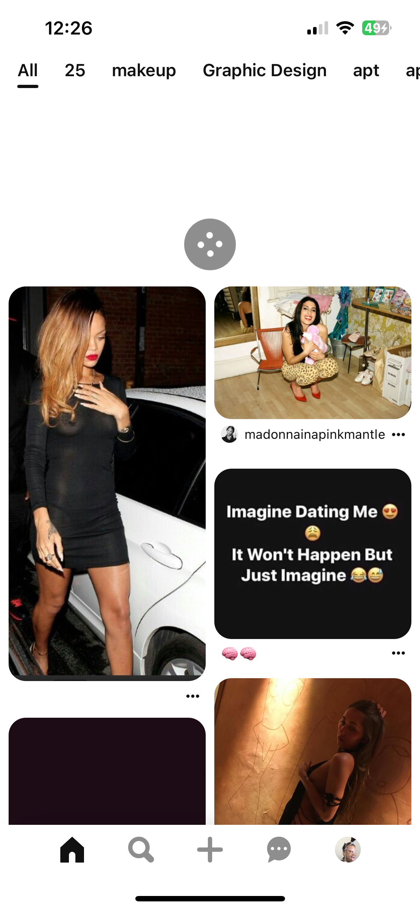
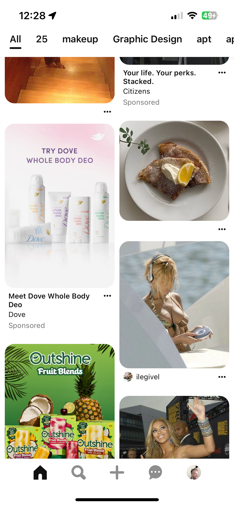
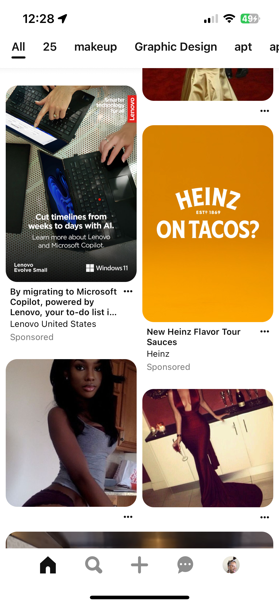

Infinite Scrolling
Mostly found on social media, set up where there is no end of content that is shown.
Like on Instagram, Pinterest, and TikTok feeds. This is a pretty positive example
since the user can get an unlimited amount of content.


